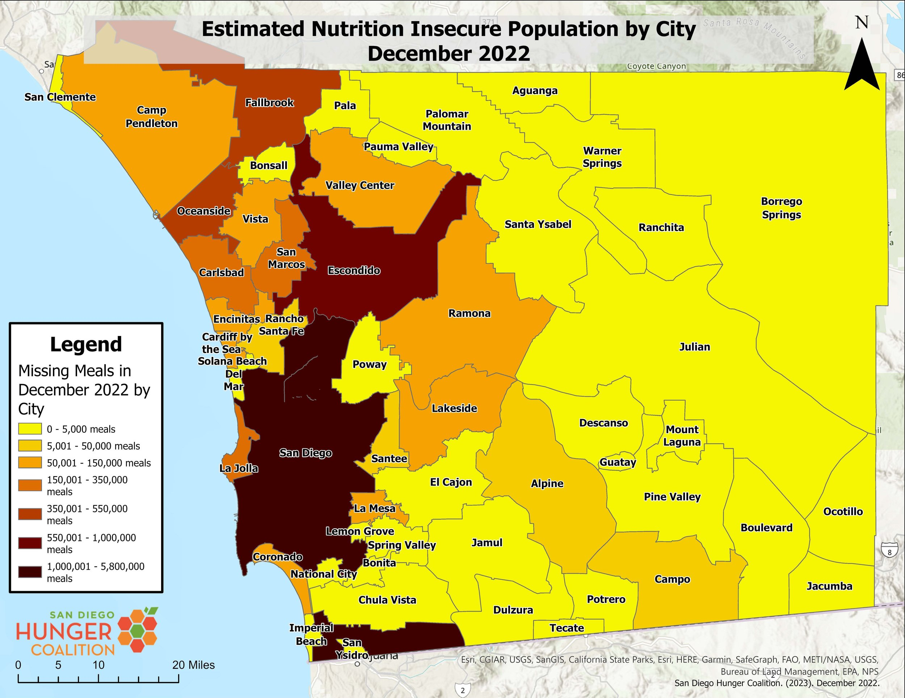

Hunger in San Diego
Article Summary

This website aims to help locals find sustainable food options and consumption of organic fresh products. This addresses the problem of food insecurity and farmers not getting the credit they deserve.
Why?
Here is a map of cities with numbers of missing meals in December 2022
Why?
Article Summary